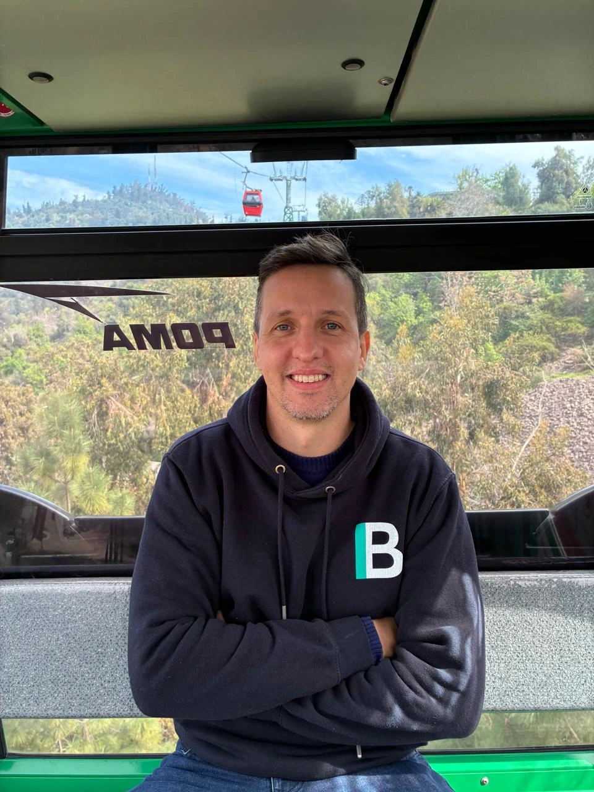
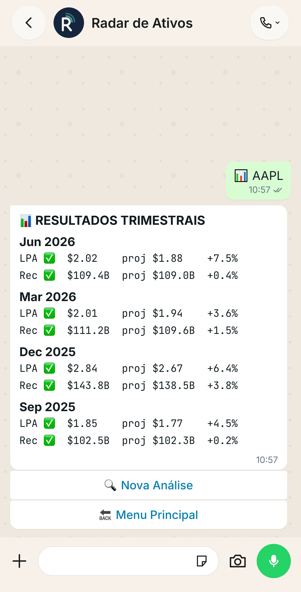
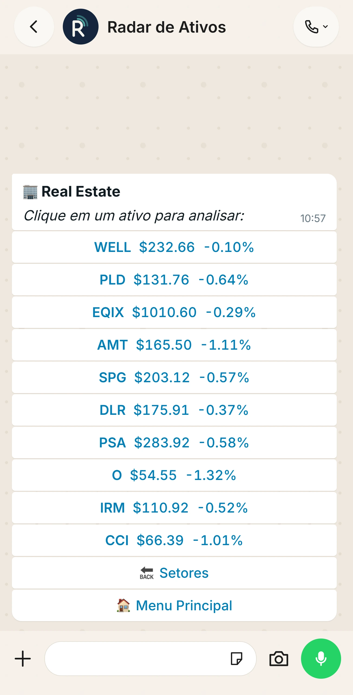
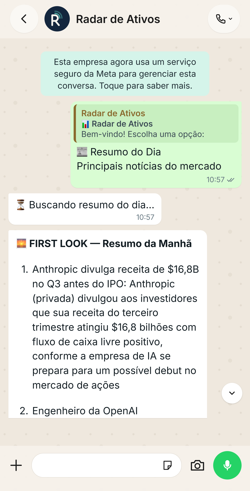
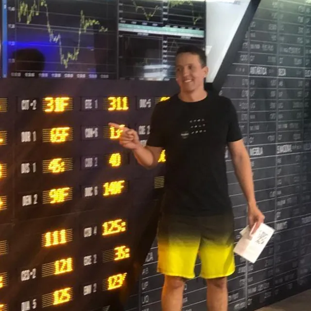

Entre no grupo gratuito do Radar de Ativos e receba diariamente o resumo do mercado, as maiores altas e baixas, análises pré-realizadas de mais de 120 ações da NASDAQ e NYSE, além da consulta a qualquer ativo das bolsas dos EUA.




Simples assim: você pergunta, o Radar explica.
O checklist com tudo o que você precisa antes da primeira compra nos EUA:

Prazer, meu nome é Rafael Ribeiro. Sou empresário, programador e investidor nas maiores bolsas de valores do mundo: NASDAQ e NYSE.
Quando comecei a investir nos EUA, minha principal dificuldade era não saber por onde começar: o que analisar, quais eram os principais indicadores e entender o que de fato era relevante analisar. Era um mundo à parte para mim e eu levava muito tempo neste processo. Hoje mantenho uma carteira dolarizada que acompanho diariamente com as ferramentas que eu criei para encurtar este processo de análise dos ativos.
Criei o Radar de Ativos para ser o guia que eu queria ter tido no começo: explicações simples, análises resumidas mas com o que eu realmente preciso saber antes de investir.
Sim. O grupo, o Radar do dia, o bot e o guia são gratuitos.
Não. Nunca pedimos senha, dados bancários ou depósito para entrar no grupo.
Não. Todo o conteúdo é em português, e nos EUA é possível comprar frações de ações, então dá para começar com valores menores.
Não. O Radar é educativo: explicamos como o mercado funciona e entregamos informações para você decidir.
Ao entrar, você recebe: